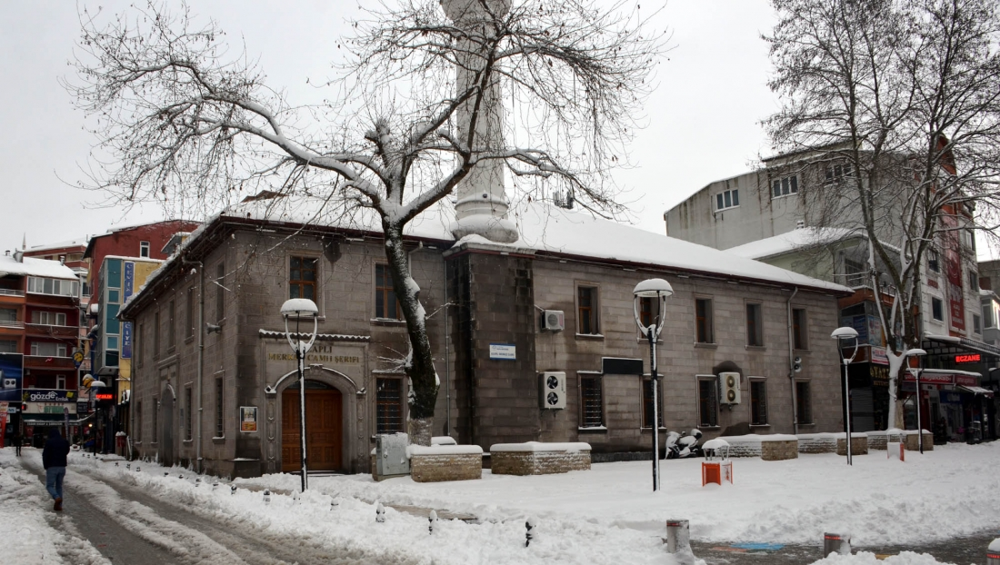
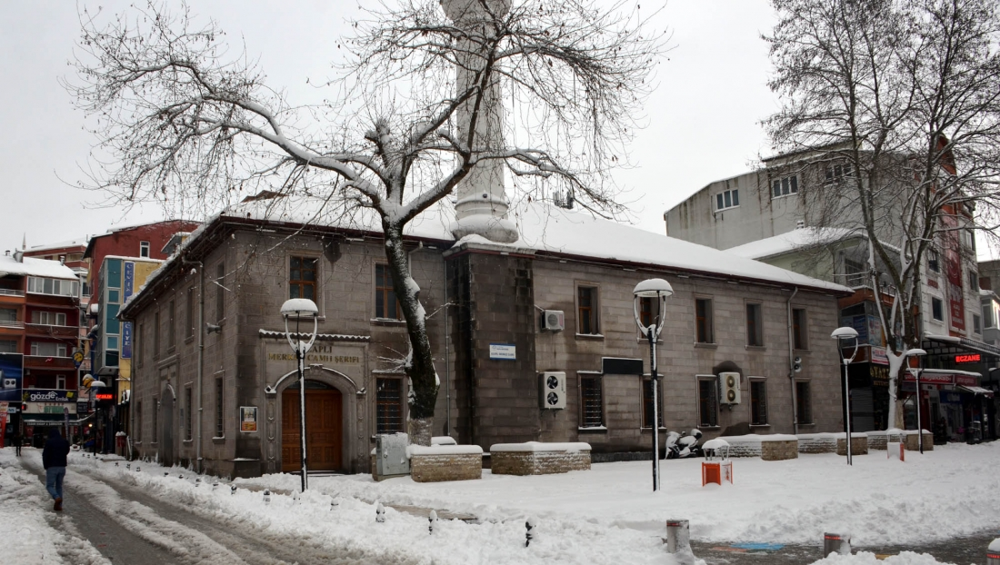

Zonguldak Alaplı
Zonguldak il merkezine 58 km uzaklıktadır. Nüfusu 20.287'dir. Balıkçılık ve fındık üretimi yapılmaktadır. Erdemir Demir Çelik A.Ş.'nin yan sanayisi de buranın geçim kaynaklarındandır. Nüfusunun çoğunu işçiler oluşturmaktadır. İlçede iplik ve fındık fabrikaları mevcuttur.
Tarihçesi
İlçenin bilinen ilk yerleşenleri Cenevizlilerdir. 1326 yılında Hereklea’nın (Kdz. Ereğli) Orhan Gazi tarafından fethedilmesinde kullanılan atların “Al” renkte olduğu ve bu nedenle İlçeye Alatlı denildiği bilinmektedir. Zamanla Alatlı ismi Alaplı halini almıştır. İlçe halkının ise köken olarak Karamanoğullarının kıvırcık boyundan geldiği söylenmektedir.
İlçe Hakkında
İlçe Zonguldak-Düzce karayolunun Kdz. Ereğli-Akçakoca arasında ve Kdz. Ereğli İlçesine bağlı bir bucak iken 4.7.1987 tarih ve 3392 sayılı yasa ile ilçe statüsüne kavuşmuştur. 14.9.1988 tarihinde fiilen kurulan Alaplı’nın Merkez ve Gümeli olmak üzere 2 belediyesi; Gümeli Belediyesine bağlı 4, Alaplı Belediyesine bağlı 5 mahallesi, 52 köyü bulunmaktadır. 2020 Yılı Adrese Dayalı Nüfus Kayıt Sistemi (ADNKS) verilerine göre nüfusun 21.655’i erkek 21.885’i kadın olmak üzere toplam nüfus 43.540 kişidir ve 2019 yılı ile kıyaslandığında 311 kişilik bir nüfus kaybı söz konusudur. Detaylı nüfus bilgileri için tıklayınız Alaplı I. Deprem kuşağında 41/53 Kuzey enlemi ile 31/25 Doğu boylamında yer almaktadır. İlçenin en önemli akarsuyu olan Alaplı Çayı İlçeyi ikiye bölerek ilçe merkezinden denize dökülmektedir. İlçenin en yüksek tepesi olan Bakacaklıyayla Tepesi 1637 m yüksekliktedir. İlçede İstihdam alanlarını ERDEMİR, TTK, kamu kurumları, küçük ve orta ölçekli sanayi işletmeleri oluşturmaktadır ve fındık yetiştiriciliği İlçe halkının en önemli geçim kaynakları arasındadır.
 
